Practical thinking. For advice firms.
Plain-English guides to the work between the first meeting and implemented advice, with checklists, worked examples and the questions to ask of any software.
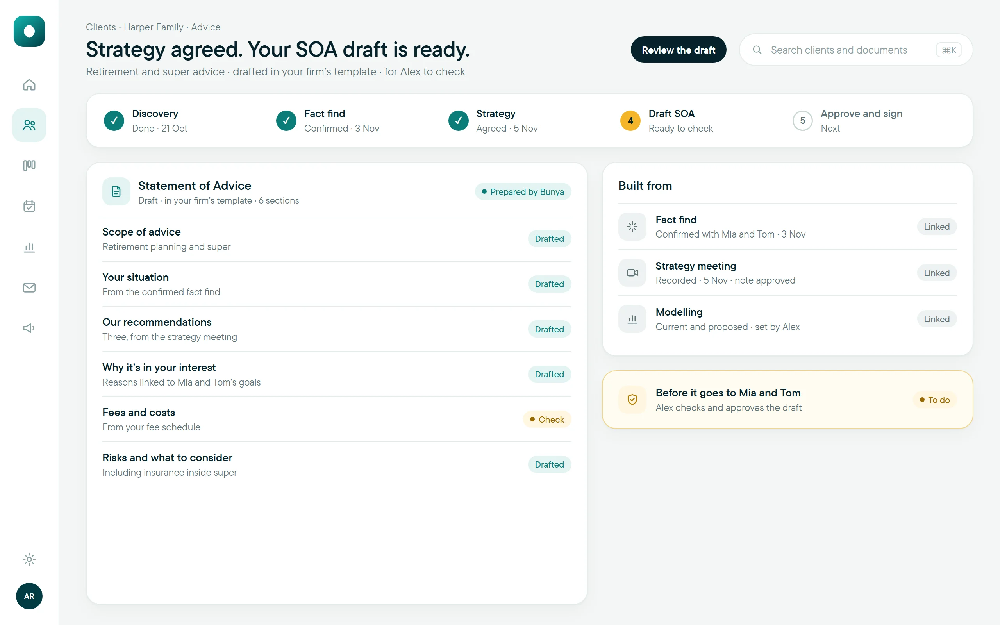
Governance & evidenceStatement of advice: when you need one, what goes in it, and how to keep it shortAn SOA has one job: helping the client decide whether to act on your advice. Here’s what the law requires, and what it doesn’t.9 min readThe library
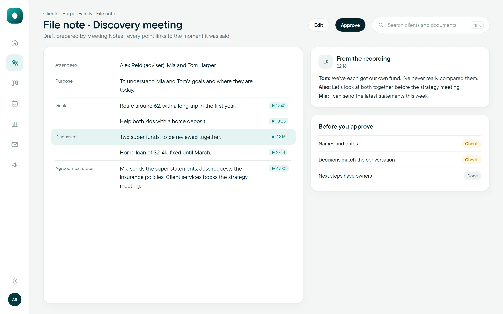
AI & adviceAI meeting notes for financial advisers: from conversation to checked file noteAI can draft the note before the client reaches the car park. The value is in what your team checks, files and follows up.8 min read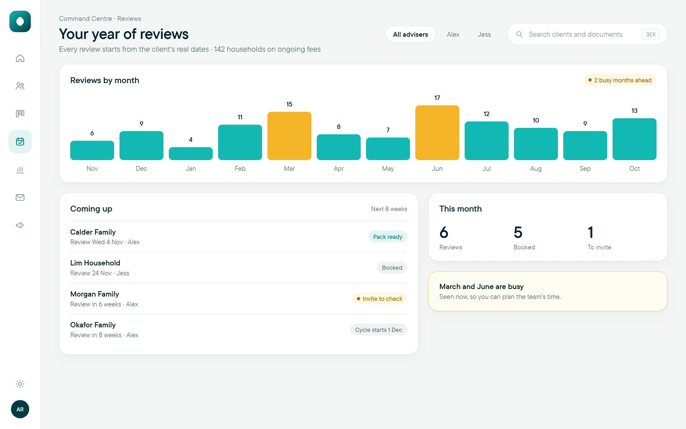
Governance & evidenceFee Disclosure Statement: What Changed, and What Replaced ItThe yearly statement has gone. A written disclosure and the client’s signed consent now carry the weight, so your records need to show both.9 min readPractice operationsParaplanning: In-House, Outsourced or AI-Assisted, and How to Run It WellMost SOA delays aren’t about writing speed. They come from thin briefs, slow queries and unclear handovers. Fix those, whoever does the work.8 min readPractice operationsA Client Review Process for Financial Advisers That Stops Reviews SlippingReviews rarely slip because someone forgot. They slip at the handovers nobody owns. Here’s how to close them.7 min read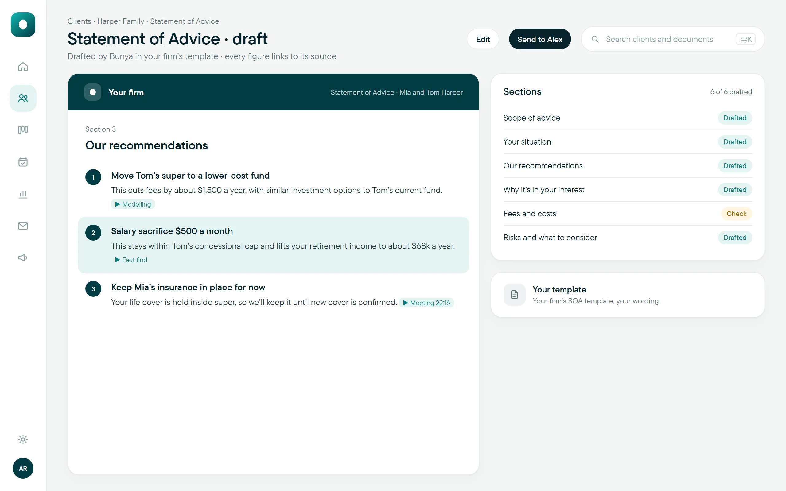
AI & adviceAI statement of advice drafting: what the software prepares and what the adviser decidesA faster first draft only helps if checking it is faster too. Here is how to keep the adviser in charge of an AI-drafted SOA.7 min read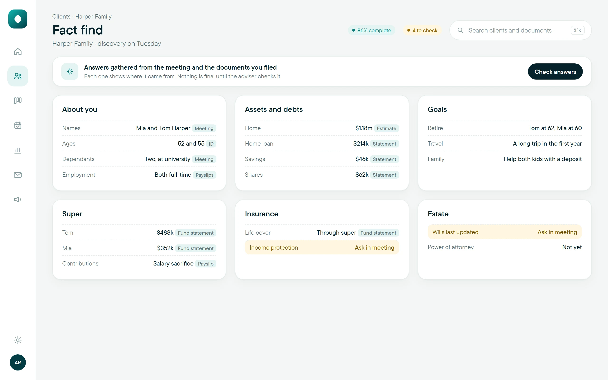
Governance & evidenceThe best interests duty in plain English: the steps, the related obligations and the proofThe duty is one sentence in the Corporations Act. Showing you met it takes a whole file. Here’s how the pieces fit.9 min read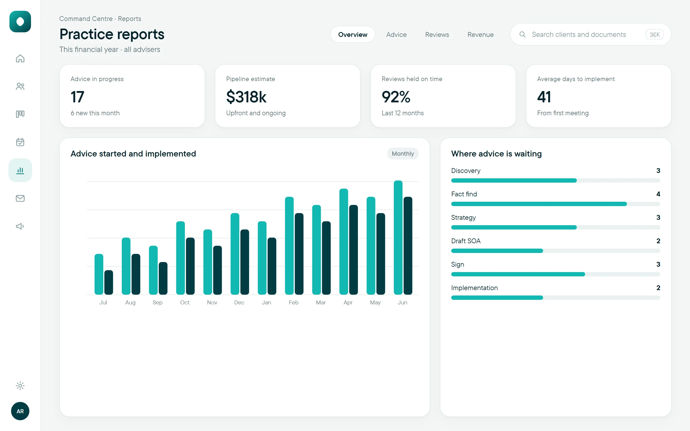
Systems & ownershipFinancial advice software cost: what to count before you compareThe monthly price is one line. Here’s how to see the whole cost, on the same scope and over the same three years.8 min read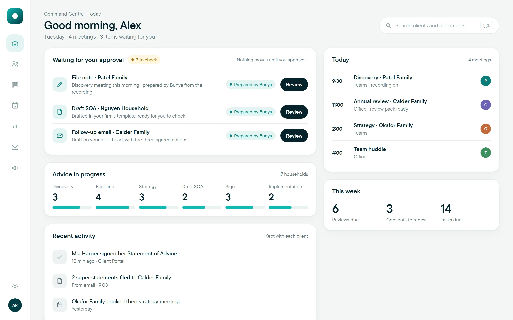
PerspectiveFinancial planning software: one system, built around your firmMost practices run on a CRM, spreadsheets and a handful of separate tools. Here’s where that’s heading, and what to ask today.7 min readPractice operationsHow to reduce admin in a financial advice practice before you hireMost advice firms don’t run out of people first. They run out of time lost to re-keying, chasing and rework.8 min read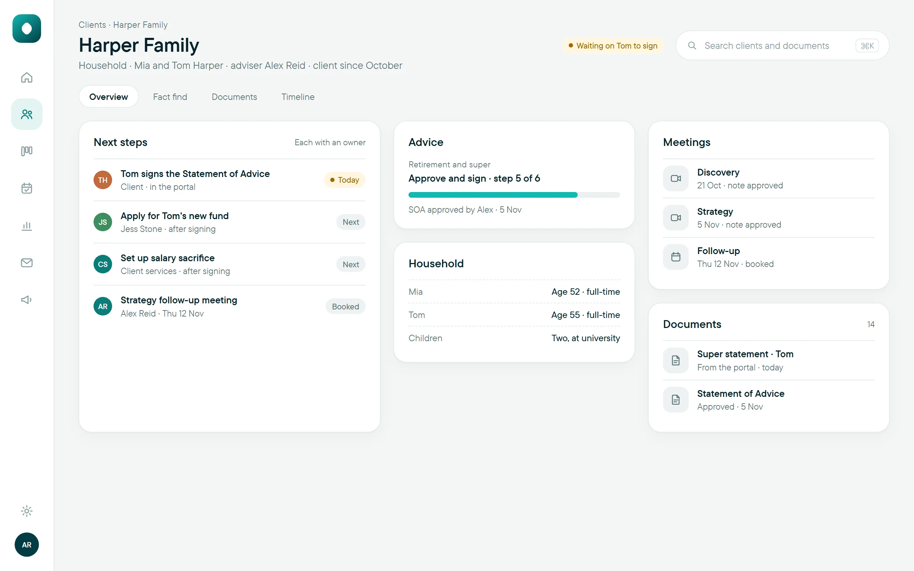
Governance & evidenceAdvice File Review Checklist: Records a Reviewer Can FollowWhen ASIC or your licensee asks for a client file, they read it as a whole. Make sure it tells the story.7 min read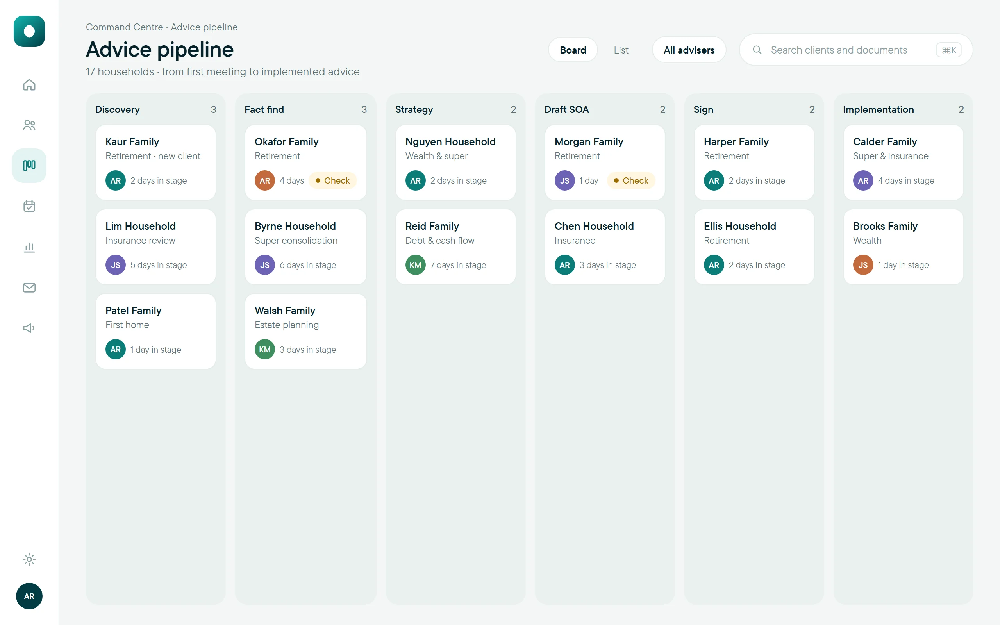
Systems & ownershipBuild vs buy software for advice firms: how to decide, and a third pathBuying can mean bending to someone else’s roadmap. Building means owning every fix. There’s a middle path worth testing too.7 min read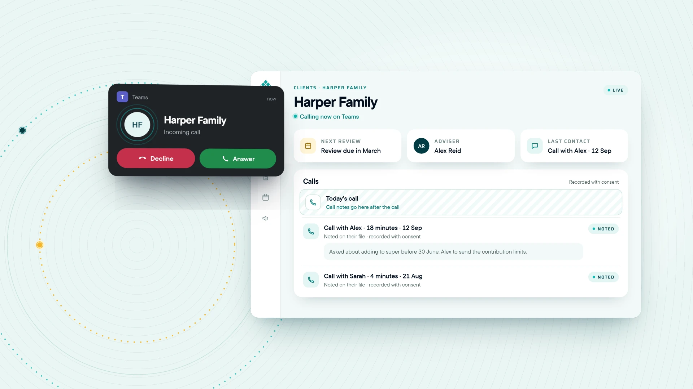
Practice operationsMicrosoft Teams Phone for financial advisers: getting every call onto the client fileMoving the phones to Teams is the easy part. What matters is what happens to the call once it ends.7 min read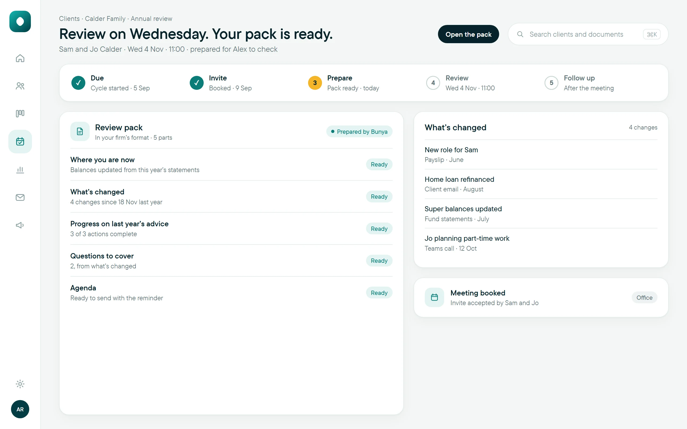
Governance & evidenceOngoing Fee Arrangement Renewal: Keep Consent and Service on One RecordA signed consent and a delivered service answer different questions. Keep both, linked, and renewals stop being a scramble.7 min readSystems & ownershipCRM data migration checklist for financial advice firmsMoving the records is the easy part. Here’s how to keep the relationships, documents and open work intact.7 min read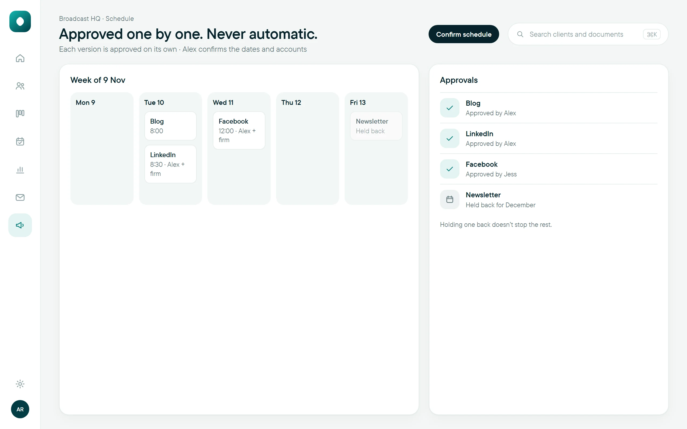
Governance & evidenceSocial media approval for financial advisers: a workflow that keeps every post accountableGive every post an owner, a reviewer and an approval tied to the exact version that goes live.9 min read Practice operationsSoftware rollout for financial advice firms: a checklist your team will actually useNew software rarely fails on features. It fails when the team quietly keeps doing the work the old way.8 min read
Practice operationsSoftware rollout for financial advice firms: a checklist your team will actually useNew software rarely fails on features. It fails when the team quietly keeps doing the work the old way.8 min read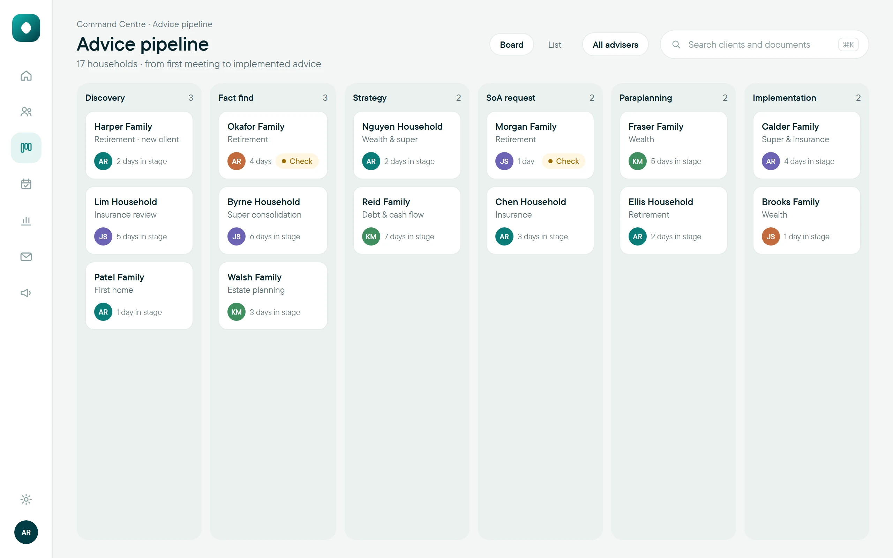
Systems & ownershipFinancial planning software in Australia: how to choose the right type for your firmMost software choices go wrong before the first demo, by comparing tools that do different jobs. Pick the type first, then the product.9 min read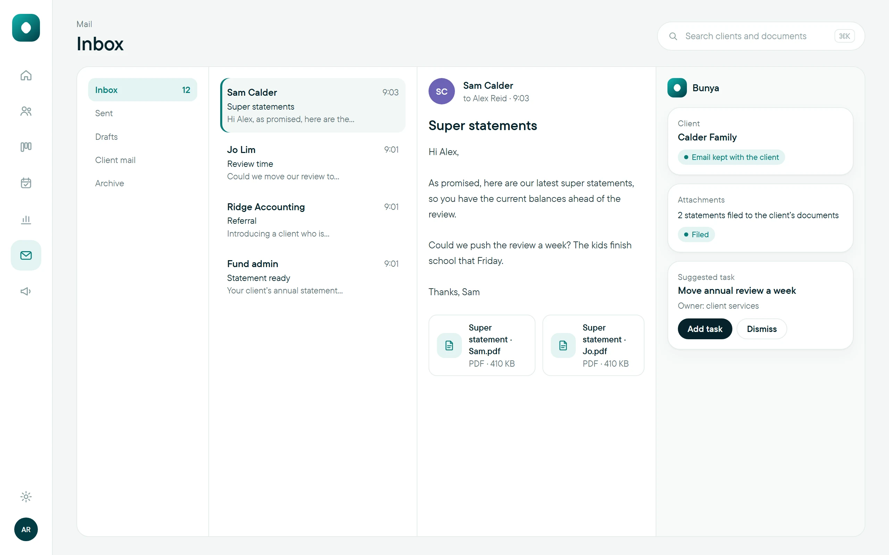
Systems & ownershipMicrosoft 365 CRM for financial advisers: three ways to keep client records inside MicrosoftIf your firm already lives in Outlook and Teams, keeping the client record there too makes sense. There are three ways to do it.7 min read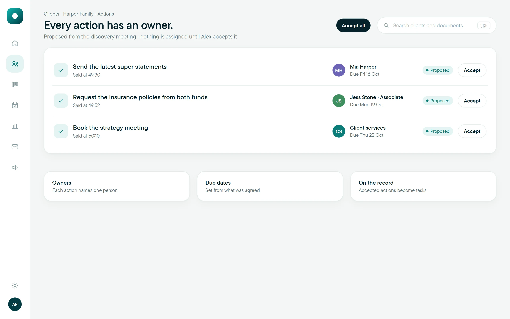
AI & adviceAI notetaker for financial advisers, or a whole practice system?A good note tool gives an adviser back the write-up. Whether that’s enough depends on what happens after the note.8 min readEvery meeting, followed through.
Advice Prosperity prepares the paperwork after every client meeting, and your team approves it. See it set up for your firm, or work out your price first.